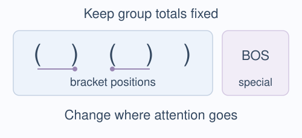

Measured follow-up · Li, Saphra et al.
Different occurrences
of the same bracket matter.
An attention replacement changes several things at once. Two successive tests separate which changes account for its effect.
From an effect to a more specific account
How much attention.
Or where it goes?
01 · Positions or group totals?

Redistribute attention between bracket positions.
165/165 qualifying families matched the account.02 · Which occurrence?

Redistribute it between identical symbols.
136/136 qualifying families matched the account.Li, Saphra et al. show that replacing attention can improve a model’s judgement of whether brackets are correctly nested. Our follow-up separates what that replacement changes. In one tested head, redistributing attention between occurrences of the same bracket predicted the measured effect; changing symbol totals alone did not. What information those occurrences carry remains open.
Keep the successful case and its limits together
A local explanation.
A visible boundary.
The illustrated head was selected after the cohort run: it was the only two-stage success among 36 tasks. Across 35 transfer tasks, stage 1 yielded 1 adequate, 33 excluded and 1 technically invalid; stage 2 yielded seven adequate. Six of those seven had the routing account excluded at stage 1. Stage 2 was the primary substantive target. Later tests excluded two more specific balance-only and position-only rules; the complete computation remains open.
The local freeze preceded execution by 7.7 seconds. After an outcome-triggered stop, an execution amendment completed the fixed cohort; predictions, cases, thresholds and multiplicity stayed unchanged. The original authors already used causal controls. This follow-up adds component tests; it neither refutes their result nor establishes an advantage over equally careful design.